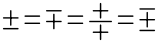
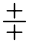
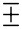

Беседа 3370 от 3877 · Беинса Дуно
Музика и здраве
Отче нашъ.
Всичко въ живота е постижимо.
Пишете върху темата „Най-лесната работа въ свѣта“.
Всички вие имате едно погрѣшно схващане въ музиката. Имашъ единъ инструментъ, мислишъ, че отъ цигулката излиза музиката. Никаква музика не излиза отъ цигулката, нито отъ органа, нито отъ пианото. Музиката е единъ вѫтрешенъ процесъ на живота. Тя излиза отъ човѣка. Тамъ сѫ законитѣ. Инструментътъ е само условие, както радиото. Слушате, радиото ви говори, но говорътъ въ радиото не се образува. То е само едно условие. Онова, което става въ човѣшкия мозъкъ, то се проектира. Музиката е изразъ на онази вѣчна хармония. Тя е единствениятъ признакъ, че сте здрави. Щомъ не искашъ да пѣешъ, щомъ не искашъ да обичашъ – ти си боленъ човѣкъ, то е мѣрката. Щомъ си разположенъ, ти тананикашъ вѫтре, ти си здравъ. Та казвамъ: Музиката е външна страна на здравословното състояние. Вие трѣбва да развиете слуха, да схващате отвѫтре какъ излиза музиката. Майката трѣбва да пѣе сопранъ, бащата трѣбва да пѣе басъ, синътъ трѣбва да пѣе теноръ и дъщерята алтъ. То е семейството, тъй като е идейно. Майката да бѫде първокласенъ сопранъ, бащата – първокласенъ басъ, синътъ – първокласенъ теноръ и дъщерята – първокласенъ алтъ. Имате вече идеалното семейство. Ако свирятъ, майката – първа цигулка, бащата – контрабасъ, синътъ – чело (виолончело) и дъщерята – алтовата цигулка (виола). Разбира се това сѫ само проекции. Вие, докато дойдете до това положение, колко поколѣния трѣбва да минатъ. Мислите, че всички имате такава музика. Но използувайте като условие. Тогава намѣсто музиката идатъ разни дрязги, които създаватъ хиляди тревоги. Тревожите се за нищо и никакво. Нѣкой пѫть капелмайсторътъ се тревожи за една нота. Въ музиката погрѣшки не може да ставатъ. Тамъ, дето ставатъ погрѣшки, то не е музика. Нѣкой пѫть ви се струва, че има дисхармония. То е когато съчетавате две гами или два тона, които не си хармониратъ. Всѣки тонъ самъ по себе си е хармониченъ, но заедно тоноветѣ не си хармониратъ.
  
Сега азъ толкозъ пѫти съмъ говорилъ за любовьта и вие казвате: „Любовь“. Че вие трѣбва да се научите какъ да постѫпавате въ любовьта. Запримѣръ, ако вие бѣхте писали една тема върху любовьта, какво бихте писали? Ще пишете както въ романитѣ, че тя припаднала, че той припадналъ. Това не е никаква любовь, който припада. Припада човѣкъ отъ страхъ. Първото нѣщо, азъ да ви представя какво нѣщо е любовьта, какъ действува. Момъкътъ си има хубава кѫща, хубаво облѣченъ е, всичко въ кѫщи има, но нѣма кибритъ. Вечерно време на тъмно седи, нѣма свѣтлина, не знае какъ да си запали свѣщьта. Като влѣзе момата, (тя) ще запали свѣщьта, той ще ѝ каже: „Много ти благодаря, че запали тази свѣщь“. То е любовь. Ще кажете: „Това е достатъчно“. Но това е началото на любовьта. Второто положение – какво прави момата? Момъкътъ всичко има, свѣтлина има, дърва има, брашно има, всичко има. Но огънь нѣма. Той знае какъ да си запали огъня и какъ да си омѣси хлѣба. Дойде тази мома, влѣзе вѫтре, запали му огъня, омѣси му питата. Казва той: „Много ти благодаря“. Третото положение на любовьта: той всичко си има, но е окѫсанъ, само дрипи отгоре му. Платове има, но не знае какъ да ги ушие. Дойде момата изведнажъ, скрои му гащи, ушие му, скрои му риза, ушие я, дрехи му ушие. Туй положение кое (е) на любовьта? Първо внесе свѣтлина, после запали огъня, омѣси хлѣба, третото положение – направи му дрехи. Четвъртото – той всичко има, книги има, но не знае да чете. Тя ще го посети, открива му азбуката. (Той) казва: „Много ти благодаря, ти ми отвори очитѣ“. Туй е четвъртото (положение). Петото положение е, че той не знае да се моли, на църква не е ходилъ. Тя го заведе на църква. Туй е се любовь, разбира се. И още колко други работи има. Че човѣкъ трѣбва да знае какъ да постѫпва. Помнете, че никога не може да ви обичатъ, невъзможно е. То сѫ стари понятия за любовьта, които имате. Казвате: „Мене не ме обичатъ“. Що ще те обичатъ хората? Щомъ каже нѣкой, че „мене не ме обичатъ хората“, то значи, че той не е обичалъ. Ти щомъ се оплаквашъ – ти си беденъ човѣкъ, никому добро не можешъ да направишъ. Ти щомъ се оплаквашъ – никаква Божествена работа не можешъ да свършишъ.
Та първото нѣщо – вие искате хората да ви обичатъ. Щомъ искате другитѣ да ви обичатъ, трѣбва да знаете и вие да обичате. Щомъ азъ обичамъ, не се интересувамъ дали ме обичатъ или не ме обичатъ. Азъ изявявамъ Божията Любовь, азъ съмъ единъ изворъ и се радвамъ на онова, което изтича отъ мене. Радвамъ се на любовьта, която иде отгоре, имамъ връзка съ Бога. На хората искамъ да имъ дамъ единъ начинъ какъ да се обичатъ. Ще кажа азъ: „Азъ обичамъ хората“. Азъ се ползувамъ отъ тази любовь. Когато обичамъ, азъ съмъ здравъ човѣкъ, ползувамъ себе си. Азъ ви обичамъ, вие сте само едно условие за мене. Азъ се ползувамъ. Нѣкой казва: „Азъ го обичамъ“. Той се ползува, Богъ го благославя. Ако нѣкой не приема моята любовь, той не се ползува. Когото обичамъ, ако той не приема моята любовь, той ще боледува. Ако възприеме любовьта – ще бѫде здравъ, всичко ще му върви. Азъ, ако обичамъ, ползувамъ себе си. Онзи, който приема любовьта, той се ползува. Ако азъ не обичамъ, вредя на себе си. Ако той не възприема моята любовь, вреди на себе си. Обратното: той, като ме обича – ползува себе си. Азъ, като възприемамъ неговата любовь – азъ се ползувамъ. Този законъ нѣма изключение. Азъ тъй разбирамъ. (Нѣкой) казва: „Азъ нищо не разбирамъ“. Ти после ще разберешъ, когато започнешъ съ любовьта. Докато не обичашъ, никакво разбиране нѣмашъ. Казва нѣкой: „Азъ много зная за любовьта“. Нищо не знаешъ за любовьта. Че го излъгала нѣкоя мома. Любовьта не го е излъгала. Излъгало го безлюбието. Сега ще ми говори, че сѫ го излъгали момитѣ. Хубаво, въ какво сѫ го излъгали момитѣ? Какво може да го излъже една мома? Нѣкой отъ васъ има ли, който да е лъганъ?
Ние сега говоримъ принципиално за живота, не частично. Нѣкой пѫть минавашъ по моста, счупи се гредата. Не че искашъ да се счупи. Като минава единъ човѣкъ и мостътъ се счупи, показва, че мостътъ не е здравъ. Та казвамъ: Първото нѣщо – трѣбва да имаме едно правилно понятие за онова, отъ което зависи живота ни. Насъ отъ любовьта ни е срамъ. Да те е срамъ, когато не обичашъ. Не да те е срамъ, когато обичашъ. Ако срамътъ иде отъ уважение – нѣщо свещено е. Най-после съвременнитѣ философи казватъ: „Нѣма любовь въ свѣта“. Слънцето изгрѣва по любовь. Дърветата растатъ по любовь. Рѣкитѣ текатъ по любовь. Вѣтърътъ вѣе по любовь. Всичко въ свѣта става по любовь. Земята въ свѣта се движи по любовь, тича въ пространството, гони нѣкого по любовь. Слънцето въ свѣта се движи отъ любовь. Всичко въ свѣта се движи отъ любовь. Хората се раждатъ по любовь, умиратъ по любовь. Когато човѣкъ умира по любовь – то е спасение. Когато умира безъ любовь – то е адътъ. Когато умира безъ любовь – въ ада е. Когато умира съ любовь – въ рая е. Когато се ражда съ любовь – благува на земята. Когато се ражда безъ любовь – страда. Сѫщиятъ законъ. Всичкитѣ страдания въ свѣта произтичатъ отъ безлюбие. Всичкитѣ радости и блага произтичатъ отъ любовьта. Тъй седи общото правило.
Сега азъ се спирамъ върху този въпросъ, понеже като станете на 40, 50 години, 60 години, ще мислите, че сте остарѣли. Че какво си остарѣлъ? Не си обичалъ на свѣтъ, не си училъ на свѣтъ. Какво си остарѣлъ? Не си работилъ на свѣтъ. Нѣкой пѫть казвате: „Срамота е да се говори за такива работи“. Оставили сте тази наука само за младитѣ да си говорятъ вечерно време безъ свѣщь. Не. Вечерната любовь, тя е хубава, ако отвѫтре има свѣтлина, ако отвѫтре има запалена свѣщь. Въ любовьта огнището трѣбва да бѫде запалено въ сърдцето. Следъ туй трѣбва да гори и на физическото поле любовьта. Когато слънцето изгрѣва, то е започването на любовьта. Щомъ е нощь въ живота, ти не може да имашъ никаква любовь.
Казвамъ: Първото проявление на любовьта въ човѣка е едно състояние, пробуждане на неговия умъ, пробуждане на неговото сърдце и събуждане на неговата тѣлесна деятелность. Щомъ си здравъ, ти вече пѣешъ. Трѣбва да знаешъ, (че) ако съвсемъ не ти се пѣе, трѣбва да знаешъ, че скоро ще заминешъ за другия свѣтъ. Туй да го знаете. Щомъ нѣкой пѣе, той е здравъ. Пѣене трѣбва да има. Нѣкой и като охка, има пѣене въ охкането. Като чуя нѣкой боленъ какъ охка, казвамъ: Този нѣма да умре. Веднажъ ме повикаха при единъ боленъ на умиране. Слушамъ какъ пѣе. Казвамъ на сестрата: Не бой се, той не ще умре, той ще оздравѣе. Като престане да пѣе човѣкъ, подписанъ му е паспортътъ за другия свѣтъ. Преди три–четири месеца дойде при мене единъ генералъ, казва ми: „Свърши се“. Като седи, слушамъ дишането му, не пѣе. Казва: „Моята се свърши“. Ако не пѣешъ, рекохъ, ще се свърши. Не се минаха три месеца и замина на другия свѣтъ.
Казвамъ: Може да продължите живота си. (Нѣкой) казва: „Защо ще пѣя? Нека Господь да ми даде животъ, тогава ще пѣя“. Че ти досега на Господь не си пѣлъ. Кой отъ васъ е пѣлъ на Господа? Изгрѣе слънцето – изпѣѝ една пѣсень. Видишъ една цъвнала круша – изпѣѝ една пѣсень. Видишъ една рѣка тече – изпѣѝ една пѣсень. Казва: „Ще ида да пѣя, като видя една круша цъвнала“. Видишъ гроздето узрѣло – изпѣѝ една пѣсень, откѫсни единъ гроздъ. Навсѣкѫде въ пѣенето човѣкъ да изразява своята благодарность, хармонично да пѣе. Казвамъ: Това е единъ истински начинъ за самовъзпитание. Ако така не мислите, не можете да имате прогресъ. Азъ съмъ правилъ опити, опити. Навсѣкѫде като влѣза, чувствувамъ, че хората не сѫ разположени, тѣ не пѣятъ. Щомъ влѣза, имамъ разположение да пѣя, тия хора сѫ здрави. Казвамъ: Тукъ трѣбва да пѣете. Та сега азъ обръщамъ внимание – трѣбва да пѣете. Нѣкой пѫть ви слушамъ отгоре какъ пѣете, нѣкой пѫть пѣете много хубаво. Казвамъ: Добре отиватъ. Та и здрави, и болни като станете – пѣйте. После – никога не критикувайте музиката. Вие ще кажете: „Не може да пѣе той“. Ами и ти не можешъ да пѣешъ. Ти критикувашъ себе си. Научи се да пѣешъ и свиришъ. Научете се поне една пѣсень да пѣете, която можете да я изпѣете хубаво. Една пѣсень, но на свѣтъ да я изпѣете. Може да е отъ три, четири реда. Може да кажемъ: „Вдъхновение, ти носишъ Божие благословение, изобилна свѣтлина, миренъ животъ“. Нѣкой отъ васъ ще кажатъ: „Защо не дойде на млади години? Сега на 40–50 години да пѣемъ, какво ще кажатъ хората?“ Да се каратъ две сестри – то е въ реда на нѣщата, а да пѣете? Две сестри на 60 години, като се каратъ, доста поумнѣли. Азъ бихъ желалъ да се каратъ музикално, както въ оперитѣ. Като застанатъ, едната сестра да пѣе: „Мари сестра, днесъ ти какво си казала? Ами сестра, знаешъ ли ти какво си казала? Ами ти, знаешъ ли, че азъ не мога да търпя. Азъ не мога да търпя, сестра“. /Учительтъ пѣе тѣзи думи/. Тогава другата сестра какво трѣбва да ѝ отговори? Защо нѣкои хора не сѫ весели? Нѣкои хора иматъ развитъ този центъръ на веселието. Нѣкои хора иматъ този центъръ на силнитѣ контрасти, виждатъ голѣмитѣ противоречия. Онѣзи не могатъ да виждатъ нищо смѣшно, веселието не може да се роди. Челото малко трѣбва да се развие.
Въ всичкитѣ нѣща човѣкъ трѣбва да вижда хубавото и красивото. Защото много работи ние въ живота сме изопачили, преподадени сѫ криво. Казвамъ: Ако така се научите да мислите, най-малко ще се подмладите съ десеть години. Седите и имате една тѫжна мисъль, казвате: „Ние не се обичаме. Ние не се любимъ“. Казвамъ: Възлюбете се. Време е да дойде любовьта. Казва: „Старъ, на 60 години, любовна работа ще прави“. Какво има, ако отива да запали една свѣщь? Какво има, ако отива да запали единъ огънь? Какво лошо има, ако купи едни обуща отъ любовь нѣкому? Какво има, ако посади едно дърво съ любовь? Или какво има, ако иде съ стомната и донесе вода? Че билъ на 60 години, срамота било. Какъ е срамота? Една стомна вода да донесешъ, срамота ли е? Ти се възгордѣешъ, не вземешъ стомната съ вода да я донесешъ, но карашъ слугата да иде. Ти като идешъ и накарашъ – намѣсто (ли) е?
Та казвамъ: По какво се отличава новиятъ животъ? Турямъ едно обяснение. Срѣщате единъ братъ и една сестра, намѣрете една хубава черта. Азъ ви казвамъ, че е лесна работа туй. Имаше една сестра, която ме безпокои безъ време и навреме. Заетъ съмъ, безпокои ме. Иде ми да я нахокамъ, да ѝ кажа, че не разбира. Като погледнахъ рѫката ѝ, намѣрихъ, че има много хубави работи. На тази сестра ѝ държахъ една лекция за половинъ часъ за любовьта. Казвамъ: Какво има да търсишъ своето щастие отвънъ? Но то е въ тебе. Ти сега гонишъ момцитѣ да те обичатъ. Рекохъ: Ти не си обичала. Ще обикнешъ единъ момъкъ. Ти мислишъ, че сега ще те лъжатъ момцитѣ. Мома, която не обича, я лъжатъ. Мома, която обича, тѣ сѫ много внимателни (къмъ нея). Никога не е имало примѣръ да обичашъ и да те лъжатъ. Никога не е имало случай въ историята да обикне нѣкой, че да му правятъ зло. Нѣма такова нѣщо. Казватъ, че обрали нѣкого отъ любовь. Ако влѣзатъ и ви обиратъ – то не е отъ любовь. Любовьта не се обира, тя не се дѣли, никой нѣма да ви я вземе. То е невъзможно. Азъ ви говоря сега принципно за любовьта. Ако дойдемъ до физическата любовь, понеже любовьта е едноцентрова, тя има три проекции на земята. Тия проекции сѫ временни. Въ младини се изявява по единъ начинъ, въ зрѣлата възрасть по другъ начинъ и въ старини по другъ. Проекции има. Тѣ сѫ основнитѣ тонове въ музиката: до, ми, соль. Човѣкъ започва съ до, ми, соль. Стариятъ свършва съ соль. Основнитѣ тонове. Ще каже нѣкой: „Трѣбва да обичаме Господа“. Сега се говори: „Да възлюбишъ Господа“. Прави ли ли сте опитъ да възлюбишъ Господа съ сърдцето си, да възлюбишъ Господа съ ума си? Човѣкъ знае нѣщо, за което е направилъ опитъ. Тази е проектираната любовь. Любовьта има деветь проекции. Има три проекции на физическото поле, три въ духовния свѣтъ и три въ Божествения свѣтъ. После, тия деветь проекции иматъ деветь съчетания. После, и минусъ иматъ тѣ. Та казвамъ: За бѫдеще цѣлата култура ще бѫде друга. Ти учишъ, учението е единъ потикъ. Бащата се грижи за дома отъ любовь. Ако нѣма тази любовь, ще напусне дома, децата и жената. Но и самитѣ животни, една птичка има петь дечица. По нѣкой пѫть тѣ сѫ на чифтове, може да има шесть. Бащата и майката ходятъ и донасятъ храна, изхранятъ ги. Като донесе и нахрани едното, после и другото, третото, и тѣзи малки знаятъ, че има единъ редъ. Като ги научатъ какъ да хвъркатъ, веднага напущатъ гнѣздото. Не ги хранятъ повече. Кой ги подбужда? Онзи, великиятъ законъ заставя тази птичка да работи. Нищо въ свѣта не е въ състояние да застави туй малкото сѫщество да носи яйца, да ги мѫти, да храни малкитѣ. Като влѣзе любовьта, ще даде потикъ на тази птичка. Тази вълна като дойде, птичката работи. Тя като дойде въ гнѣздото, знае кому е дала. Даде на едното, на второто, на третото, четвъртото и т.н. Бащата като дойде, и той ги познава, та така се проявява.
Като влѣзете въ духовния свѣтъ, ще ви дадатъ едно изпитание на любовьта. Христосъ дава единъ примѣръ за богатия. Защо богатиятъ не каза на Авраама: „Отче Аврааме, позволете да ме пуснатъ отъ ада, понеже азъ се мѫча. Да ида да имъ проповѣдвамъ, да имъ разправя какво мѫчение има (въ ада).“ Топло му бѣше въ ада, казва: „Лазаръ да напусне небето, да иде да проповѣдва“. Научилъ се да заповѣдва. И въ ада като се мѫчи, (богатиятъ) пакъ заповѣдва: „Да пратятъ Лазаря“. (Авраамъ) казва: „Не може да иде“. Азъ зная вече тази работа. Понеже заповѣдва, затуй не му се изпълни желанието. Ако богатиятъ би поискалъ той да иде да проповѣдва, щѣха да го пуснатъ отъ оня свѣтъ. Казвамъ: Сега и вие, като богатия, искате други да пѣятъ. Щомъ дойде мисъльта на една стара сестра нѣкоя млада да ѝ попѣе, тя да пѣе. Може младата сестра да ѝ покаже какъ да пѣе. Гледамъ много стари сестри – срамъ ги е да пѣятъ. Нѣма нищо, нека пѣятъ. Младата сестра и старата сестра нека пѣятъ. Нѣкой старъ братъ и нѣкой младъ братъ нека пѣятъ. Ако стариятъ знае да преподава, младиятъ да се учи. Въ пѣенето млади и стари нѣма. По този начинъ ще се създаде една атмосфера съвсемъ друга. Ако тъй бихте работили, отвсѣкѫде щѣха да бликнатъ извори, всичко щѣше да върви въ хармония. Ако за една година бихте направили единъ опитъ, тукъ болести по дърветата, нѣкои дървета сѫ болни, понеже не се пѣе, музика нѣма. Лѣкуватъ ги съ синъ камъкъ. Ако има музика, всички паразити, които има по дърветата, ще си идатъ. По-хубаво лѣкарство отъ музиката въ свѣта нѣма. Ако музиката би се приложила, всичкитѣ да пѣятъ, учителитѣ да пѣятъ – 99% щѣха да се възпитатъ. Ще остане 1%. Приложете този методъ, той е най-лесниятъ и най-ефикасниятъ. Не само пѣене, (но) тогава въ васъ ще се създаде иденъ стремежъ да учите, да работите, въ всичко ще ви върви. Като се изгуби импулса, на човѣка не (му) се работи. Казва: „Що ще ида да уча, азъ вече съмъ старъ“. Като идешъ въ другия свѣтъ, искатъ знания. Азъ съмъ превождалъ този примѣръ, въ Варна се случило, действителенъ примѣръ е. Една стара жена на 60 години сънува, че отива въ другия свѣтъ. Като отива въ оня свѣтъ, гледа 12 старци седятъ около една маса. Тя влиза тамъ, казва: „Добъръ день“. Казватъ ѝ: „Защо дойде?“ (Тя) казва: „Дойдохъ, искамъ да живѣя тукъ“. (Тѣ) казватъ: „Ти знаешъ ли да четешъ?“ – „Не зная“. Казватъ ѝ: „Тукъ вода ще носишъ“. Казвамъ: Като идете въ оня свѣтъ и не знаете да обичате, вода ще носите. Казвамъ: Когато вие обичате, за любовьта никому не говорете нищо. За любовьта не говорете, че обичате. Ти само давашъ нѣщо отъ себе си, защото ти като давашъ отъ себе си, мязашъ на единъ изворъ. Той, като дойде, трѣбва да оцени любовьта. Когато те обичатъ, тогава си давай мнението. Като обичашъ, не си давай мнението. Ти самъ се ползувашъ като обичашъ. Ти проявявашъ Божията Любовь и Богъ те благославя. Ти мълчи, понеже Господь те учи. Щомъ започнешъ да брътвишъ много, ще престане да те учи, ставашъ невежа. Нищо не говори, когато Богъ те учи въ любовьта. Когато обичашъ, радвай се на любовьта. Когато те обичатъ, тогава си давай мнението. Казвамъ: Когато Господь ви учи да обичате, мълчете. Когато Господь ви учи чрезъ любовьта на другитѣ, тогава оценете любовьта. Кажете: „Много хубавъ е плода, много съмъ благодаренъ“. Туй сега не е по законъ. Казвамъ: Ако така постѫпвате, ще влѣзе въ васъ единъ новъ животъ. Вие сега чакате да умрете. Че какво ще стане? То е безлюбие туй. Онѣзи обичатъ нѣкого, но като умре – заровятъ го въ земята. Казватъ: „Да се научишъ какъ да обичашъ“. Заровятъ го въ земята, турятъ паметници. Това сѫ паметници на безлюбието. И Христосъ, Който обичаше, въ свѣта не му туриха пръсть, ни най-малко, но му туриха камъкъ. На гроба имаше само единъ камъкъ, като въ стая бѣше, и тамъ не остана. Като дойде ангелътъ, излѣзе. И въ гроба като влѣзе, излѣзе. Въ гроба, ако влѣзете и ви заровятъ съ пръсть, опасна работа е. Ако следъ една година пакъ ви намѣрятъ въ гроба, показва, че нищо не сте разбрали отъ закона на любовьта. Само посѣйте семената и ще видите. Казватъ: „Тия хора умрѣха“. Умрѣха всичкитѣ все отъ безлюбие. Възкресението иска знание. Всѣки, който обича и е обичанъ, той ще възкръсне, нищо повече. То е мое мнение, не мнение, но азъ тъй зная. Всѣки, който обича и когото Богъ обича, ще възкръсне. Който предава любовьта и който приема любовьта – той ще възкръсне. Казватъ: „Тѣ ще възкръснатъ“. То е възкресение. Ами че Христосъ, като дойде на земята, въ какво се прояви? Хората вѣрватъ въ туй, което не е. Вие искате да знаете дали нѣкой ви обича. Чудни сте. Нѣма какво да мислите. Нѣкой човѣкъ отъ самосебе си не може да ви обича. Всѣки, който ви обича, той има потикъ отъ Бога. Може да кажешъ, че е отъ самосебе си. Всѣки, който ви обича, има потикъ отъ Бога. Ако той е вѣренъ на този потикъ, той се благославя. Всѣкога, когато ти възприемашъ любовьта на хората, то е пакъ потикъ на любовьта. Да възприемешъ любовьта, по два начина се учи. Ако не можешъ да обичашъ и не можешъ да възприемешъ моята любовь – нищо не можешъ да направишъ, нищо не може да се ползувашъ. Апостолъ Павелъ, когато говори за любовьта, казва: „Ако зная всичкитѣ езици и имамъ всичкото знание, а любовь нѣмамъ, ще съмъ кимвалъ, що дрънка“.
Ха сега, коя сестра ще изпѣе „Изгрѣва слънцето“? Ха нека стане една стара и една млада, отъ любовь да стане, не заради моитѣ думи. Ако нѣкой отъ васъ има потикъ, импулсъ, не да кажа: „Стани, сестра“, (а) потикъ да дойде. Вие, ако не пѣете, азъ ще ви пѣя най-после. /Учительтъ изпѣ „Фиръ-фюръ-фенъ“/. Може да се пѣе още по-хубаво. „Изгрѣва слънцето“ кой ще изпѣе? Азъ ви похвалявамъ въ тази постѫпка. Всѣки иска да даде пѫть на другитѣ, пъкъ той остава последенъ. Но въ другитѣ работи не е тъй.
Изучавалъ съмъ какъвъ ритъмъ има музиката. Не е лесна работа. Коя сестра ще изпѣе „Изгрѣва слънцето“? /Една сестра и единъ братъ изпѣха „Изгрѣва слънцето“/. Изпѣйте сега „Давай, давай“.
Всичко, което е посѣто въ вашия умъ, въ вашето сърдце, да възрастне. Богъ да възрасте посѣтото въ физическия свѣтъ, въ духовния свѣтъ и въ Божествения свѣтъ. Най-първо ще пѣете на физическото поле. Вие отвѫтре се притѣснявате, отвѫтре трѣбва да станете музикални. Казва: „Не зная да свиря“ То е външната страна. Всѣки си има по единъ инструментъ. /Учительтъ свири на цигулката, после изсвири и каза/. Сега азъ наричамъ това „движение на сърдцето“. Когато лѫкътъ отива надолу, рѫката се движи отгоре надолу, то е въ връзка съ слънчевата енергия. Когато рѫката се движи отдолу нагоре, енергията отъ земята иде. Казвамъ: Ако на земниятъ ритъмъ давате слънчевата цена, не е право. Нѣкой пѫть на слънчевия ритъмъ даватъ земна цена. Слънчевиятъ ритъмъ има едно влияние, земниятъ ритъмъ има друго влияние. Двата ритъма, единиятъ е положителенъ, другиятъ е отрицателенъ, образуватъ този крѫговратъ на човѣшкитѣ мисли и на човѣшкитѣ чувства. Седнешъ, каквото и да работишъ – ще пѣешъ. Ще кажешъ: „Господи, досега не съмъ пѣлъ. Ще слугувамъ на Господа. Ще слугувамъ на Господа“. /Учительтъ, като пѣеше тѣзи думи, ходеше и силно удряше съ кракъ по пода/. Ще слугувамъ на Господа, на Господа, хей! Сега азъ пѣхъ и въ васъ може да се зароди мисъльта, че въ пѣенето трѣбва деликатность. Следъ време ще се зароди. Въ пѣенето искатъ деликатность. Има деликатни положения, които отпосле ставатъ. Нѣкой пѫть най-първо деликатно е запалена една клечка кибритъ. Следъ време туй деликатното може да стане грандиозно, много опасно. Пъкъ има известни течения, които въ началото сѫ грандиозни, после ставатъ меки. Дъждътъ, който слиза отгоре, въ началото е грандиозенъ, но после този дъждъ има много благотворно влияние въ природата. Азъ изтропахъ силно съ крака си, единъ день ще има по-меко. Колкото времето минава, утихва, този ритъмъ става по-лекъ, по-лекъ. Въ природата не трѣбва да правимъ критика. Всичко, което става въ природата, и духането и на вѣтъра, е на мѣсто. И тихото време, и силниятъ вѣтъръ, всичко, което става въ природата, то е Божествено. Върху него трѣбва да имаме само едно мнение, за да се възпитаме. Ние критикуваме – вѣтърътъ лошъ, слънцето грѣело, хората не сѫ хубави, този не е хубавъ, онзи грозенъ. Та ние още красотата я нѣмаме. Защото това сѫ маски на хората. Маскитѣ сѫ, които остаряватъ. Ако хората бѣха безъ маски, щѣха да видятъ истинската красота. Всѣки день да се измѣня. Като видите единъ човѣкъ, като го погледнете, отдалечъ лицето да се запали отъ любовь.
Всички искате да ви обичатъ. Че какъ ще ви обичатъ? Трѣбва да дадете нѣщо. Искате нѣкой човѣкъ да ви благодари. Ще повикате човѣка, ще извадите медъ отъ пчелина или грозде отъ лозето ще наберете. Като яде, веднага ще ви благодари. Срѣщатъ се двама и единиятъ казва: „Добъръ день, Иване. Отъ кога не съмъ те виждалъ, дълго време има. Кога ще си платишъ дълга?“ Вие кога ще си платите онзи дългъ, който имате да плащате? Турцитѣ казватъ: … /липсва въ оригинала/. Нѣма търпение, казва му: „Не съмъ те виждалъ дълго време, кога ще си платишъ дълга?“ Това нѣма мѣсто. Ако е за дългъ, кога ще се отплащаме? Нѣкой казва: „Азъ нѣмамъ нищо да дължа. Не съмъ плащалъ нищо за слънцето, което ме е грѣло, на вѣтъра, който духа, на водата, която тече – нищо не съмъ плащалъ“. Тукъ плащаме само за канализацията, не за водата. Хиляди блага има, за които Господь и дума не прави.
Та казвамъ: Тогава решавамъ да живѣя по любовь. Толкозъ голѣма любовь Богъ има, ще изпълня Волята Му. Ще се научите да изпълните Волята Божия съ музика.
Това е животъ вѣченъ да позная Тебе Единнаго Истиннаго Бога и Христа, Когото Ти Си пратилъ.
ХХ година
25. Лекция на Общия Окултенъ класъ
2 априлъ, 1941 год., 5 ч.с., Срѣда
Изгрѣвъ.